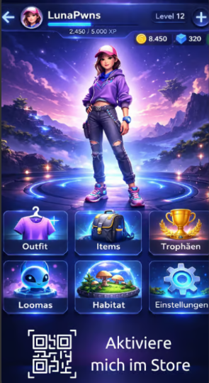

Store Walk
🐾 0
Suche GPS-Signal…
Dev
Irgendwo tippen zum Fangen!
Dieses Wesen wurde deiner Loomas-Sammlung hinzugefügt.
Bon scannen
Scanne deinen Kassenbon oder lade ein Foto davon hoch – das System erkennt den Store und schaltet dein Item frei.

Screen folgt als Nächstes
Screen folgt als Nächstes